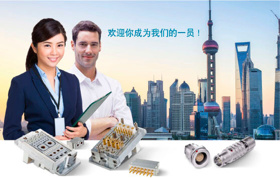

WIR SUCHEN SIE ALS:
KONSTRUKTEUR (M/W) MIT FOKUS ASIEN
ARBEITSORT: MÜHLDORF A. INN
IHRE AUFGABEN:
-
Konzeption und Konstruktion von Einzelkontakten und kundenspezifischen Steckverbindern – das beinhaltet die Durchführung von Berechnungen und Risikoanalysen, die Konstruktion von Teilen und Baugruppen sowie die Betreuung der Projekte über den gesamten Produktlebenszyklus
-
Abstimmung der technischen Anforderungen und Kundenwünsche mit unserem globalen Vertrieb bzw. mit den Kunden sowie Machbarkeitsklärung konzernweit mit den Kollegen der
-
Leitung, Koordination und Organisation von Aufgaben zwischen den projektbeteiligten internen Abteilungen und externen Dienstleistern bzw. Lieferanten weltweit
-
Erfassung und Pflege von Artikelstammdaten und Stücklisten im ERP- und PDM-System
-
Initiierung von Laborversuchen
IHR PROFIL:
-
Erfolgreich abgeschlossenes Studium im Bereich Feinwerktechnik, Mechatronik, Maschinenbau, Elektrotechnik o.ä.
-
Konstruktionserfahrung und Kenntnisse in 3D-CAD-Programmen, bevorzugt Creo
-
Erfahrungen mit ERP- und PDM-Systemen sind von Vorteil
-
Sehr gute Chinesisch-, Deutsch- und Englischkenntnisse
-
Reisebereitschaft für Projektabstimmungen in Asien
-
Eigenständige, zielorientierte Arbeitsweise sowie Team- und Kommunikationsfähigkeit
-
Hohes Verantwortungsbewusstsein